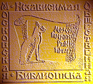

|

- Очерки психологии мировоззрения как основы просветительской практики ( Comments )
- От ничтожности к сопоставимости с Мирозданием или к вопросу о смысле существования человека ( Comments )
- Нобелевская лекция И.П.Павлова 'О русском уме' ( Comments )
- Проект "Бизнес, власть, общественность и СМИ в российской благотворительности" ( Comments )
- Дело Виталия Бунтова ( Comments )
- Дело Егора Новиковского ( Comments )
- Все мы сыны и дочери Человечества, но не собственность возомнивших о себе… ( Comments )
(все новости...)


Карпатское путешествие |
||
| Главная-->Страноведение-->Украина-->Карпатское путешествие | ||
|
|
|  | Литературное приложение к газете «Петля обратной связи» Москва, №1, август 2010 г. |
Батенкова Лена
Карпатское путешествие
Лето 2009 года. Июнь, август - сентябрь
Первое впечатление
Места эти очень красивы и необычны для наших глаз. Широкая долина обрамлена невысокими лесистыми горами, ее рассекает река Чёрный Черемош. Звук реки не смолкает ни на мгновение, - меняется лишь его сила и характер. Подумалось прямо сейчас, что подобный характер присущ и людям, живущим в этой долине. Спокойствие, сдержанность, даже скрытность может в мгновение ока обернуться страстностью, гневом, неприступностью.
Немного истории
Здесь живут гуцулы.
Откуда они пришли и когда? Даже сами они этого точно не могут сказать. «Мы жили здесь всегда», - и такой ответ кажется вполне правдоподобным, потому как горы, которые всегда здесь с тобой, всегда на виду, молча подтверждают это ощущение исконности земной жизни. Но иногда жизнь оборачивается здесь хрупким мгновением случайности. В прошлом году эти горные районы настигло несчастье наводнения. Две недели непрекращающихся дождей непрочные дамбы выдержать не смогли, и вода хлынула в долины, затапливая на своем пути деревни, дороги, города.
Та деревня, в которой остановились мы, в прошлом году тоже испытала весь ужас водной стихии, но человеческих жертв, к счастью, не было, и дороги в целом удалось восстановить за короткий срок. Хотя, вода подходила к самому дому наших хозяев.
Верховина
А жили мы в усадьбе семьи Спасских в селище под названием Верховина. До нынешней весны, когда мы выбирали по карте маршрут путешествия, я думала, что Верховина - это название горной местности, ее поэтическое имя. Но оказалось, что это большое древнее село, которое называлось, впрочем, совсем по-другому до самого недавнего времени. Верховиной оно стало в 1969 году, а до того звалось «Жабье». До окончания 1-й Мировой войны село входило, как и вся территория Карпат, в состав Австро-Венгерской империи. С 1920 по 1939 год это была территория Польши. С 1939 года по 1941 по пакту Молотова-Риббентропа территория была оккупирована советскими войсками. В 1941 сюда вошли нацисты. После освобождения советскими войсками в 1944 году Западная Украина (и Верховина в том числе) осталась в составе Советского Союза. В 1991-м в результате развала советской империи Верховина вошла в состав независимой Украины. Это - если очень кратко.
Но эта справочная краткость трагически отражена в судьбах целого поколения людей, до сих пор живущих в Карпатах и в Западной Украине в целом. Мы встречали пожилых мужчин и женщин, родившихся еще в Австро-Венгрии, - им более 90 лет. Конечно, как и везде, их не очень много, но нам важно было понять, что история Украины - это живая и очень драматическая история современности. Все, что случилось с этими людьми, еще живо в их памяти, в памяти и судьбах их близких потомков.
Понять происхождение названия деревни мы смогли очень скоро. Однажды теплым июньским вечером мы возвращались домой с прогулки. Закат был тихим, солнце спокойно садилось в чистом небе где-то за дальними вершинами гор, еще укрытыми легким снежным одеяльцем. И вдруг послышался странный звук. Как будто высоко в небе летела стая журавлей. Курлыканье было столь четко различимым, а небо столь чистым, что это несовпадение видимого и слышимого серьезно нас обескуражило. Мы остановились и стали всматриваться в небо, надеясь увидеть птиц, но все было тщетно. Тут из магазинчика вышли двое мужичков с бутылками пива в руках. Мы к ним. «Скажите, - спрашивает Дмитрий, - а кто это так поет?». «Так то ж жабы», - в глазах местного жителя сверкало веселое недоумение, - мол, что это вы так опрохвостились, дорогие гости? Действительно, мы были поражены. В канавках вдоль дороги курлыкали десятки, а может быть, сотни жаб. Ведь стоял июнь, - брачная пора...
Но самое замечательное, что лишь спустя 3 месяца мы обнаружили ошибку в названии деревни. Жабы не очень любят воду, и в канавках сидели не жабы, а жерлянки!! Местные жители называют их любовно певками. Однажды в августе, когда мы жили выше в горах, в старом доме наших хозяев, Дима обнаружил жерлянку в корытце родника у горной дороги. И понял, что и в долине в канавках сидели жерлянки. Эти существа вовсе не лягушки и не жабы, но тоже земноводные. Рыжий животик и нежный голосок отличает их от лягушек и жаб, а вот характер гораздо жестче. Так может ужалить, - что лучше ее не касаться!
Существует и другая версия происхождения названия «Жабье» - от древнего гуцульского божества огня, аналогичного литовскому божеству огня Габье. Там и сейчас так называют огонь домашнего очага. Кроме того, во многих древних культурах жаба или ее отдельные элементы обозначали духа огня. В случае с «Жабьим» произошло, наверное, сочетание двух моментов: наличие вокруг селища огромного количества существ, очень похожих на жаб, и важная роль огня в гуцульской мифологии, нашедшего свое выражение в образе жабки.
Свастика в гуцульских узорах
Стихия огня для гуцулов означает постоянное возрождение, обновление жизни весной, когда горы покрываются цветущими коврами трав. Кончается зима, и на полонины выгоняют отары овец - до поздней осени они останутся на высотных пастбищах, и это время для гуцулов - самое важное в году.
Солнце, огонь издревле обозначались в мировой культуре солярным знаком - свастикой. И гуцульское искусство отразило эту мировую тенденцию. В знаменитых гуцульских вышивках часто можно вполне четко различить знак свастики.
Конечно, это немного неожиданно, но вполне объяснимо.
В семье, где мы жили, вышивают все женщины. Гуцульская вышивка отличается насыщенными цветами - зеленым, черным, оранжевым, бардовым. Чем выше в горах живут гуцулки, тем больше темных оттенков будет в их узорах. И на богатых гуцульских ярмарках можно сразу узнать, - из какой местности привезли вышивку.
Улица им. Ивана Франко
В любом местечке, селе, небольшом городке всегда есть главная улица, так сказать, свой Бродвей. Есть он и в Верховине. - улица им. Ивана Франко. Вряд ли нужно говорить, что при советской власти этот Бродвей носил имя Ленина. Улица эта рассекает село прямо посередине, как и река Черный Черемош. Только река сразу заворачивает в переулочки, вьется ленточкой, огибая горы, а улица Ивана Франко сначала прямая, как стрела, а потом такая же извилистая как река, далеко летит среди деревень и хуторков, переходя плавно в другие улицы и дороги, так и долетает до равнины, где раскинулся город Черновцы.
Гулять по этой улице можно долго, - практически все музеи, библиотеки, учреждения, храмы, магазины находятся здесь. Я расскажу о нескольких эпизодах, связанных у нас с этой улицей.
-
Свобода, которую не афишируют
В первый же день мы увидели на столбе плакат с изображением Януковича, Тимошенко и Путина: оба кандидата в Президенты Украины были поражены «стрелами амура», изображенного в правом верхнем углу плаката похожим на Путина. И название: «Кремлевский брак». Комментарии, что называется, излишни. Мы уже знали, что в этих краях довольно активно действует политическая партия, возглавляемая националистом Тягнибоком, - так называемая «Свобода». В Тернополе на местных выборах некоторое время назад она победила, получив большой процент голосов и, соответственно, мест в областной Думе. Этот плакат был изготовлен именно этой партией, и он, конечно же, был не единственным из пропагандистских материалов этой партии, которые мы смогли раздобыть, находясь в Верховине. Еженедельно мы приходили в магазинчик канцелярских товаров, где газета этой партии лежала на полке для свободного распространения. Но надо заметить, что сотрудники магазинчика достаточно красноречиво стеснялись этого, - она казалась им агрессивной.
2. Власть, которую не боятся
Часто нам приходилось слышать от местных жителей, что Ющенко - «слабый президент». Объясняли они свою оценку, как правило, тем, что он распустил чиновников и коррупционеров, что за каждой справкой нужно ходить днями и неделями, простаивая в очередях. Но, в отличие от нас, скажем, украинцам понадобился всего один срок такого президентства, чтобы на следующих выборах за него не проголосовать. Они понимают, конечно, что один человек, даже с более твердым характером, чем В.Ющенко, не может быстро эту коррупцию искоренить. Но они жаждут перемен. Мне показалось, что они не хотят возвращаться к тому, что было до «оранжевой революции», люди хотят двигаться вперед. Особенно те, кто крепко уже стоит на своих ногах, имеет собственность, трудится на земле, думает о будущем своих детей и внуков.
Одним из проявлений народного разочарования президентством Ющенко и властью «оранжевых» стало нежелание некоторых верховинцев вывешивать государственные флаги в день Независимости Украины в своих частных владениях. На мой вопрос «почему?» услышала ответ: «Не хотим ассоциироваться с этой властью. Мы не чувствуем с ней единства».
И я поняла тогда, почему мне так вольно дышится в Украине. Здесь много свободных людей, которые живут своими мыслями и своими чувствами. Это то, чего мне так не хватает на родине. Это - воздух...
3. Храмы, которые посещают
Я уже говорила, что на главной улице поселка расположились практически все общественные места, включая администрацию, храмы и музеи. Нам пришлось наблюдать, как отмечают гуцулы религиозные праздники. Буквально все жители отправляются в храмы. И храмы эти в большинстве своем - православные Киевского Патриархата. Есть греко-католические общины, старообрядческая и две небольших православных общины Московского Патриархата. Нынешняя Ивано-Франковская область входила до окончания Первой мировой войны в состав Австро-Венгрии как часть бывшей Польши, а с 1918 до 1939 года в состав Польского независимого государства. Украинские крестьяне были православными и довольно большая их часть - униатами. Униаты или греко-католики - это католики, которые следуют византийской литургической традиции, т.е., совершают богослужение по греческому образцу. В 20 веке в период между двумя мировыми войнами Украинская Греко-католическая церковь (УГКЦ) активно развивалась, в частности благодаря деятельности митрополита Галицкого Андрея Шептицкого. Но в 1939 году, после прихода советских войск и установления коммунистического режима на территории Западной Украины, УГКЦ стала объектом пристального внимания НКВД. В то время НКВД открыто не препятствовал ее деятельности при условии, что УГКЦ не будет проводить антисоветской агитации, однако уже в 1939 году некоторые лица УГКЦ попали в оперативную разработку НКВД, и было заведено несколько оперативных дел. Если говорить совсем коротко, задачей Кремля было ликвидировать УГКЦ, оторвав ее постепенно от Запада и в первую очередь от Ватикана путем создания автономной или автокефальной украинской церкви с последующим ее присоединением к РПЦ, но начавшаяся война помешала осуществлению этих планов. Окончательное уничтожение УГКЦ состоялось в 1946 году на Львовском Соборе. Советское правительство рассматривали УГКЦ как центр националистического движения на Западной Украине, что было одной из главных причин принятия руководством СССР политического решения о ее ликвидации.
Сегодня подавляющее большинство местных жителей являются православными. Ясно мне так же и то, что после войны сюда были присланы батюшки московские, как надежные воспитатели непокорной паствы в духе, нужном Кремлю.
В центре села стоит немного необычный для наших глаз православный храм. В архитектуре он явно носит черты западного храмового строительства: луковки куполов не так круглы, как на Руси, прямоугольная форма здания напоминает мне правильную форму католических соборов, а в Черновцах униатский храм вообще необыкновенной красоты, - башенки, держащие купола, как бы закручены в наклонном стоянии, - такой праздник в душе от этой асимметрии! И еще. Вдоль дорог, буквально на каждом шагу стоят часовенки, оформленные уж совсем по католическому образцу - с фигурками ангелов и мадонн - ровно это мы наблюдали на дорогах Польши много лет назад, когда ехали из Москвы автобусом во Францию под Рождество. По-видимому, эта двойственность и отражает историческую правду. В архитектуре выражена преемственность поколений украинского крестьянства, жившего среди католиков, впитавшего в себя культурную стилистику храмового строительства, но при этом сохранившего глубокую связь с православием. После Львовского Собора начался катакомбный период УГКЦ, сопровождавшийся преследованиями духовенства и мирян, депортацией их в Сибирь и северные районы СССР. Значительная часть верующих, оставаясь греко-католиками, посещала православные храмы РПЦ. В 1990 году, после встречи в Ватикане президента СССР М.Горбачева и Папы Иоанна Павла II, был снят запрет на создание Греко-католических общин, была разрешена их регистрация и проведение богослужений. Но привычка - великая вещь. Сегодня у украинцев есть выбор, - в какую церковь пойти. А это значит, последнее слово остается за ними.
Жизнь в усадьбе
Мы жили сначала на высоте 650 метров над уровнем моря. Чистый воздух, освежающие дожди и жаркое солнце прочистили наши легкие и наполнили душу новыми ощущениями, а сердце покоем.
Семья, в которой мы жили - довольно большая: родители с тремя сыновьями, невесткой старшего сына и внучкой Ирэнкой. У них огромное хозяйство: 2 дома для приема гостей, ферма, коровы, овцы, поросята, куры, кролики, кони. И еще, наверное, что-то, но я просто об этом еще не знаю...
Мы питались натуральными продуктами (!!!), выращенными, приготовленными прямо здесь. Свежее молоко, творог, сыр - еда вкусная и полезная; много овощей с огорода, ягоды и грибы, супы каждый день, телятина, свинина (нежирная, ну, а сальце тоже есть, если кто захочет), вареники с вишней, зразы с сыром, уточка печеная, и обязательно по утрам кашка из круп. Компоты, соки, простокваша и даже домашние йогурты! Они называются по-гуцульски - «гуслинка».
Первые 10 дней мы жили совершенно одни в огромном гостевом доме, комфортном и красивом. Потом приехали 8 человек, из которых четверо - меленькие детки, и нас перевезли в другой дом, в полутора километрах от основной усадьбы, прямо на берегу реки у подвесного моста. Правда, здесь нам еду сначала никто не готовил, - по утрам я сама ходила за завтраками в главную усадьбу, а вечером Василь (средний сын хозяев) привозил нам ужин на велосипеде! Но иногда мы и сами ходили пешком на ужин, - пройтись по живописной деревне одно удовольствие! Позже, когда дом заполнился новыми гостями, хозяйка пани Василена стала привозить обеды и ужины и в этот дом, где главным на хозяйстве был Василь.
Каждый день работали за компьютером (как правило, сразу после завтрака, правда, он был не ранним, около 11.30). Работали часа 4. А потом - прогулки и чтение.
Путешествия
Бывали дни, когда мы уезжали в путешествие, и тогда уже полностью отдавались природе и новым впечатлениям. 25 июня мы взошли на Говерлу, а неделей раньше ездили в соседнее село на большой праздник «Полонинське лiто». Красота неописуемая...
Деревня, в которой проводится этот праздник вот уже многие годы, находится примерно в семи километрах от Верховины. С самого утра туда съезжаются гости со всей Западной Украины - со Львова, Тернополя, Ивано-Франковска. Очень много молодежи. Народ отправляется на праздник семьями, все - в народных гуцульских одеждах. Подъем на полонину проходит довольно организованно и спокойно, - а ведь собираются вместе тысячи людей, и неожиданности всякие могут случиться...
Милиция распоряжается парковкой автомобилей, и с этим проблем не бывает. На всем пути к вершине (около километра длиной) стоят торговые палатки - чего тут только нет! Спелая ароматная клубника, черешня, горячие пироги и напитки, пиво, соки, вино, изделия из дерева, вышивка! Глаза разбегаются от обилия и красоты товара...
День выдался отличный - не жарко, и дождя нет. Иди себе и наслаждайся жизнью!
На вершине у меня дух захватило - не от высоты, нет, а от огромного числа людей. Мы не привыкли с Димой бывать на таких многолюдных сборищах. В России мы стараемся даже этого избегать. И здесь мне поначалу было не сосем уютно, хотелось поскорее уйти, я ни на чем не могла сосредоточиться. Но постепенно праздник увлек меня, и я, уже не переставая, щелкала фотоаппаратом, стараясь запечатлеть каждое мгновение этого яркого и страстного зрелища. Зажгли огромный костер, - символ обновленной жизни, сжигающий все прошлые беды и страдания. Жарко стало, как у раскаленной печки. Музыка, доносившаяся со сцены, не могла оставить никого равнодушным, - гуцульские трембиты и скрипки, цимбалы и дудочки, - все это возвещало торжество жизни.
Мне стало весело и свободно.
Встреча с Президентом
В самый разгар праздника на полонине появился украинский Президент в сопровождении главы администрации района и митрополита Филарета. Мы сначала с Димой даже не поняли, что произошло, - почему все сразу куда-то двинулись, - толпа мгновенно пришла в движение. «Президент приехал!», - раздалось в самой гуще. И все сразу стали вытягивать шеи, поднимать на плечи детей и включать фотокамеры. Мы оказались в первом ряду зрителей, - здорово! Ющенко был очень спокоен и расслаблен. Он много снимал фотокамерой - она висела у него на шее. В одно мгновение толпа расступилась, и в круг вышли дети. Зажигательный гуцульский хоровод никого не оставил равнодушным, - ни президента, ни митрополита, ни всех остальных гостей. Интересно, что мы не видели практически никакой охраны, - настолько она была незаметна. Никто никого не отдавливал, не оцеплял, никакого ОМОНа, милиции и т.д. Несколько парней атлетического сложения с проводками в ушах, и все.
Нужно ли говорить, что в России такое сегодня просто Н Е В О З М О Ж Н О.
Ющенко несколько раз приезжал в Верховину в течение лета. А его дети отдыхали в составе отряда пластунов в усадьбе Спасских (там же, где отдыхали и мы) в июле. Говорят, президент очень любит эти места, у него здесь неподалеку дача. Понятно, почему он часто сюда приезжает: чистый воздух, тишина, отсутствие сумасшедшей столичной жизни многое могут подарить человеку, а тем более - руководителю страны.
В августе мы два дня провели в усадьбе Спасских в то время, когда там отдыхал один из охранников Ющенко с семьей, но мы в тот момент об этом не знали (что он - охранник президента). Сергей (так звали этого парня) ничем не отличался от многих других молодых украинцев, которых мы видели, путешествуя по стране в течение 4 лет: спортивный, коммуникабельный, доброжелательный.
Мы познакомились за ужином довольно курьезно. Сергей входил в столовую, когда мы уже приступили к трапезе.
- Приятного аппетита, - с улыбкой произнес он.
- Надо говорить «смачного», - с упреком в его адрес произнесла я. Мы уже знали о том, что они с женой киевляне и украинский язык для них родной.
Он был поражен и начал даже слегка оправдываться:
- Ну, вы же из России, говорят, с вами надо по-русски говорить... - и вовсе растерялся Сережа.
- А мы как раз хотим, чтобы с нами говорили по-украински, мы много уже чего понимаем.
В общем, мы немного его озадачили, но говорить по-украински он после этого не стал. Два дня мы общались исключительно по-русски.
Мифы
Миф 1. На Западной Украине москалей не любят, и говорить по-русски здесь небезопасно.
Миф 2. Западные украинцы во время 2-й мировой войны поголовно сотрудничали с немцами - так называемые «бандеровцы».
Миф 3. Западные украинцы антисемиты и во время 2-й мировой войны осуществляли массовые убийства евреев.
Реальность
Да, в тех горных районах Западной Украины, где нам пришлось побывать в этом году, говорят исключительно по-украински, - в отличие, скажем, от районов Крыма или центральной Украины. Но мы-то украинского не знаем, поэтому с нами разговаривали в основном по-русски. Проблема была в нас самих: мы просили местных жителей разговаривать с нами по-украински, чтобы лучше узнать их язык, чем, безусловно, сразу вызывали их расположение. И этот момент был очень важен, - нам стали доверять. Вспоминается один довольно забавный случай. Мы пришли в Музей музыкального искусства гуцульщины. Его основатель и бессменный экскурсовод - Роман Кумлик - разговаривал с нами по-русски, а когда появилась группа из Днепропетровска, он обратился к ним с предложением говорить по-русски, так как «у нас сегодня гости из Москвы». Те нисколько не возражали. Возражали мы. И Роман Кумлик, уступая нашей настоятельной просьбе, повел дальше экскурсию на украинском языке. Я в очередной раз убедилась, что трудно переоценить роль языка в межкультурных связях. Отношение к языку способно разрешить сложнейшие социальные и политические проблемы... Наше отношение к украинскому языку обеспечило нам доброжелательный прием у западных украинцев, везде нас принимали как дорогих гостей.
Думаю, что радикальная политика украинского президента в отношении русского языка как официального серьезно осложнила ему работу и саму социально-политическую ситуацию в Крыму и в восточной Украине, где традиционно проживало большое количество русскоговорящего украинского населения. В Феодосии, где мы по-долгу жили в течение 3-х лет, нам часто приходилось слышать от вполне образованных людей, что если бы Ющенко сохранил статус русского языка, то многие в Крыму поддержали бы его политику. Я лично считаю, что нация имеет право на ведущую роль в своем государстве родного языка. Но исторические примеры свидетельствуют о том, что политика в этом вопросе должна быть чрезвычайно осторожной, - особенно в условиях распадающихся империй и образования самостоятельных национальных государств. Многие украинцы по рождению отказываются говорить по-украински, потому что они продолжают считать себя советскими людьми. И с этим приходится считаться политику.
Хотя, я допускаю, что с моими мнением категорически не согласится большинство украинцев Западной Украины - и они тоже будут правы...
Но в Буковине ситуация совершенно иная. В Черновцах, - столице края, мы почти всегда и везде слышали русскую речь. И этому тоже есть объяснение. Черновцы (или Черновицы - в Австро-Венгерской империи) был городом как минимум пяти языков: украинского, немецкого, румынского, еврейского, молдавского. На немецком говорили, конечно, большинство населения, но частенько случалось, что люди разных национальностей общались друг с другом на родном языке собеседника, и это считалось нормой! Две войны, ассимиляция, депортации, геноцид, лагеря подорвали культуру космополитизма, и на ее руинах взросла советская культура. А советский человек говорит на русском языке как языке интернациональной империи. Он - ее оплот, ее оружие, ее награда. Но вместе с победой русского языка Буковина потеряла (навсегда ли?) своеобразие многоязычия, мультикультурности, свободы, наконец...
И еще одно маленькое замечание. В Верховине, куда приезжали на отдых, в основном, поляки, общение с местным населением происходило у них тоже по-русски. Не все украинцы знают польский и не все хотят на нем разговаривать. Тоже - исторические обиды...
История 2-й мировой войны еще жива в судьбах гуцулов. Мы хорошо это поняли на примере семьи Спасских-Зеленских, в которой прожили весь июнь. Постепенно из рассказов хозяйки пани Василены и ее сына Василя перед нами открылась живая страница истории, которая еще не успела кануть в лету.
Отец пани Василены - Василь Михайлович Зеленський - слава богу, жив и еще работает в своем хозяйстве в деревне Замагура, которая находится в 9-ти километрах от Верховины. Ему было 10 лет, когда нацисты оккупировали бывшую польскую территорию, на которой проживали гуцулы, евреи, поляки, украинцы. Хуже всего пришлось евреям. Им спастись было практически невозможно, но среди местного населения были такие, кто пытался им помочь. Таким оказался дед пани Василены, который увез в горы семью знакомых евреев с детьми и прятал их до тех пор, пока свои же, соседи, не сдали их карателям. Во время облавы евреи были убиты, включая и детей, пан Васильрасстрелян, а двое его сыновей взяты в заложники и отправлены в Коломыю. По дороге младшему (будущему отцу пани Василены) удалось спастись, - он спрыгнул с поезда, улучив момент, когда охранник отвернулся. А старшего брата расстреляли как заложника.
Судьба мужчин в семье очень характерна для того времени и не является исключением. Один служил в польской армии и сражался с немцами в ее рядах, бежал, скрывался в родном доме, - воевать не хотел. Так всю войну и просидел в подвале. Другой ушел в лес к «лесным братьям», - а попробуй, откажись? Еще один ушел с Красной Армией, вернулся с «победителями» и сдал своего брата-«бандеровца», таким образом спасая всю семью от депортации в Сибирь. Все они еще живы, врагами между собой не стали.
И мы поняли, почему сегодня в Западной Украине не любят «ворошить» прошлое - люди не хотят новой гражданской войны. В одной семье, порой, родные братья стояли по разные стороны баррикад.
Украинский национализм
Конечно, национализм есть, но он не столь расистский, как в России. Дважды я слышала, как вслед нам дети говорили «кацапы». Но это были дети, подростки, не очень воспитанные. Взрослые себе этого не позволяют. Более того, везде с нами здороваются (так принято в деревнях везде, и у нас тоже). Сначала нас принимали за поляков. Действительно, русских мы еще (я имею в виду москвичей или других россиян) здесь не встречали. В основном отдыхают украинцы, поляки, немцы, чехи. Поляки бывают здесь часто, они хорошо знают эти места и любят путешествовать в Украинских Карпатах.
Больные вопросы
Евреи Австро-Венгерской империи раньше, чем российские, получили равные права со всеми другими представителями национальных меньшинств. А это означает, что конкуренция между ними и гуцулами, например, была довольно значительной, - во всех областях экономической жизни, а землевладения в особенности. Крупная и экономически мощная еврейская община проживала в Коломые, Косове, - это примерно в 50 километрах от Верховины. В 17 веке сюда, в Жабье приезжали еврейские купцы, везли нужный гуцулам товар с крупных ярмарок, - безусловно, за него приходилось платить немалые деньги. И сегодня еще гуцулы поминают, как «прижимали» их тогда «жиды», запрашивали большую цену за товар - бисер, ткани, зерно. А что делать было евреям, - ведь товар-то приходилось доставлять издалека...
Я прочла книгу на гуцульском языке об истории села Жабье (16-20 вв.). Интереснейшее свидетельство складывающихся буржуазных отношений в традиционном обществе. Так вот, что меня поразило: при всей неприязни к «жидам», именно они выбирались казначеями в громадах, держателями важнейших документов. И именно на них сваливали все растраты, кражи и неприятности, хотя тут же и доказывалась их полная невиновность. Евреи постоянно жили под «дамокловым мечом» гнева и наказания со стороны соседей-общинников, и неважно при этом, как они себя вели, сколько денег жертвовали на общинные нужды и т.д. Еврейская слободка в Жабьем соседствовала с польской улицей, собственно, их дома стояли вперемежку. Мы смогли в этом убедиться во время путешествия к старинному еврейскому кладбищу и месту массового расстрела евреев и украинцев во время 2-й мировой войны. Повел нас туда Василь. Он сам предложил нам посетить эти места, рассказал, что знал о тех трагических днях от своего деда.
Отправились мы туда 5 июля, в жаркий, чудесный полдень. Вышли за околицу деревни и пошли слободкой. Верховина занимает огромную территорию, на которой расположились несколько деревень, когда-то существовавших автономно. Путь наш лежал в живописнейшей долине среди самых высоких гор Чорногорского хребта. В синей дымке мерцал Пипиван, на вершине которого приютилась обсерватория, выстроенная поляками в 30-х годах. Повюду стояли стога, воздух источал ароматы трав и цветов, пели птицы. Сердце тихо билось, не смея потревожить этот вселенский покой природы...
Сначала мы посетили старинное еврейское кладбище. Наверное, со времен возникновения деревни поселились здесь и евреи, здесь же находили они и свой последний приют. Таких кладбищ разбросано по всей Украине множество, и мы несколько уже посетили. Это особенно интересно тем, что находится теперь на частной территории, и чтобы попасть сюда, Василь ездил заранее к хозяину этой земли договариваться о нашем посещении. Сказал, что последний раз был здесь года два назад - приводил туристов из Европы. Видно, что давно здесь уже никого не хоронят. Плиты покосились, все заросло травой. Но хорошо уже то, что владелец земли не уничтожил кладбище, а огородил его, так что любой прохожий запросто сюда не пройдет. Память жива, и хочется верить, что и потомки этого праведного хозяина не уничтожат последние следы евреев на гуцульщине...
Горы по-прежнему молча окружали нас, ветер нежно теребил роскошные травы, птицы пели, а вдали кричали петухи, - от жары и одиночества, наверное...
Далее наш путь лежал к месту массового расстрела.
Осенью 1942 года нацисты расстреляли недалеко от деревни Ильцы 700 евреев и несколько десятков украинцев из близлежащих деревень. Василь дорогой рассказал нам, как «старые люди рассказывали, что евреи перед смертью говорили украинцам, сопровождавшим колонну: «нами ров выстелют, а вами закроют...». Так и случилось.
Сегодня дорога ко рву и памятнику заросла травой, видно, что редко здесь бывают люди. Василь сказал, что сам сюда пришел в первый раз...
Ров сегодня весь зарос густой сочной травой. Вокруг стоят безмолвные стражи - величественные смереки. Все это место находится на небольшом возвышении, а деревня - внизу. Горы напротив кажутся более близкими, чем домики среди густых фруктовых садов. А людей и вовсе нигде не видно.
И все-таки, все они здесь. Все замученные страдальцы остались здесь, среди их родных лесов и гор, трав и птиц. И эта незабываемая красота природы болью отзывается в самом сердце учащенным пульсом и горечью от невозможности изменить прошлое.
Жизнь в гуцульской деревне
8 июля мы уехали в Черновцы, где пробыли до 17 августа.
17 августа около 4-х часов пополудни мы снова въезжали в Верховину после полуторамесячного отсутствия. Добирались через горы, с двумя пересадками в Вижницах и Косове. Конец августа в Карпатах открывает сезон грибов и роскошных закатов. 2 дня мы пробыли в усадьбе Василя, передохнули немного, закупили продуктов и отправились еще выше, в деревню Замагуру, в старинную усадьбу семьи Парасковьи Федоровны Белькевич, - тетки пани Василены. Еще в июне мы договорились с нашими хозяевами, что они разрешат нам пожить 3 недели в их старом доме, в 5 километрах от Верховины. Нам нужно было купить электрическую плиту и лампочки. Василь обещал забросить нас на хутор и помочь устроиться.
Так все и произошло.
В среду, 19 августа мы приехали в хутор Вiбчинка. Жить нам предстояло на высоте около 800 метров, среди гор и лесов. Метрах в ста - соседи, гуцульская семья, в которой остались лишь старики и дети, - взрослые разъехались кто за границу, кто на заработки в другие регионы Украины. А младший сын съездил даже в Россию. Но вернулся, «не солоно хлебавши», что называется: весь заработок, как водится теперь у нас, присвоили себе те, кто на работу вербовал. Алексей (так зовут его) едва ноги унес домой.
Сразу же, как внесли в дом вещи, - обнаружилась проблема - нет света. Василь долго искал причину, но безрезультатно. Где-то что-то не замыкалось. И тут приходит этот самый Алексей и предлагает помощь. Оказалось, он профессиональный электрик. Быстро принес лестницу, инструменты, и дело пошло! Забрался по лестнице на столб и смело где-то что-то «перекусил», и вот - ура! Да будет свет! А нам без этого дела никак нельзя, - на печке у нас компьютер стоит, ждет своего часа...
Дом старинный, добротный, красивый, с резной верандой и окнами, все как полагается у гуцулов. Только вот уже 3 года, как никто в нем не жил, и эта пустота для дома хуже смерти, - из него дух жизни уходит. И вот эту жизнь мы должны были в него вдохнуть. Вообще-то, вдыхал ее Дима, я лишь сделала первый маленький вдох...
Четыре дня Дмитрий чистил-мыл-мастерил-устраивал. Соседка, тоже пани Василена (!) ахнула, когда в дом вошла... А Дмитрий из дома музейчик сделал: вычистил бочку, где прежние хозяева капусту квасили, выхлопал и просушил на солнце тканные половики, прочистил керамические печи, полы до блеска помыл.
И стали мы жить-поживать...
Рассветы в горах в конце лета поздние, - пока солнышко из-за вершин выкатится...
И день - короткий, но чистота воздуха и вольный ветер успевают так душу согреть, что ночь кажется мгновенным сновидением.
Гуцульский дом устроен так: длинная парадная веранда, вдоль всего дома, выделана ручной резьбой, дверь открывается с парадного входа в просторную горницу, откуда насквозь можно пройти в заднюю дверь прямо на огороды. Благодаря таким вот сквозным дверям дом очень хорошо проветривается.
Из горницы ведут четыре двери: на кухню, в две спальни (отдельные входы) и на второй этаж, где еще 2 жилые комнаты. Ясно, что дом огромный. Построен чуть больше 100 лет тому назад. В нем прожили 3 поколения родственников, и вот теперь его владельцем стал Василь Спаський - внучатый племянник Парасковьи Федоровны Мартищук (Бiлявич).
Дом выглядел запущенным, что неудивительно: 3 года в нем никто не жил, а до отъезда последней жительницы Прасковьи Федоровны его уже не поддерживали много лет. Но даже сейчас он выглядел достойно, добротно, и как показали дальнейшие события, был совершенно готов для жизни. Печки работали, кровати из дуба и ясеня были очень удобными, пол не скрипел и не проваливался, а крыша не протекала. Нам оставалось лишь привести его в жилой вид, что Дмитрий с блеском проделал.
Когда мы разместились на пятый день в обустроенном «кабинете», где на печке красовался наш ноутбук, на стене висел ковер ручной работы, а на стенах - рушники, то душа пела и радовалась всему белому свету, и время замерло на мгновение, очарованное увиденным...
Хутор, как я уже говорила, расположен на высоте примерно 800 метров. Из окна на кухне виден Чорногорский хребет, где-то вдали синеет Говерла, а низу, в долине, лежит Верховина. В магазин каждый день не находишься, поэтому питались мы тем, что завезли на машине и тем, чем угощала нас практически каждый день соседка пани Василена.
Сразу - проблема: что делать, - отказываться от угощения или принимать? Конечно, сразу отказываться было неудобно, а позже - и невозможно. Так мы попали в гостевую кабалу, которая обернулась не совсем приятными переживаниями.
Ясно, что мир, в котором мы оказались, для нас необычен, мы в нем - странники и неофиты. Пришлось полагаться на здравый смысл и чувство юмора, хотя последнее давалось иногда с трудом.
Начнем с детей. Старшая внучка Вика, 12 лет, восприняла нас как абсолютно доступных людей, которые вытерпят ее присутствие, сколь бы долгим и бесцеремонным оно ни было. Она поначалу приходила, когда хотела, и нам стоило немало труда и терпения приучить ее уважать нашу независимость и покой. Добились того, что Вика стала приходить по договоренности. Но возникала новая задача: каждый раз она что-нибудь приносила в качестве угощения, приготовленное и отосланное бабушкой. И уже по собственной инициативе по-тихонечку что-нибудь у нас вымогала. Потом все чаще и чаще стала приходить с младшим четырехлетним братом, который непосредственно исполнял все ее указания: то конфетку попросит, то оладушек, то водички попить. Я не сразу поняла, к чему она подводила мое неразумное сознание. Ей казалось, что за угощение мы должны платить. Иногда она не выдерживала «политесов» и напрямую спрашивала меня, а сколько мы платим бабушке за тот или иной продукт: молоко, сметану, вареники и т.д. Иногда бабушка приносила нам угощение сама, в то время, когда Вика отсутствовала, и я чутьем понимала, что не надо ей знать, что бабушка принесла нам. Мы пробовали отказываться от еды. Но это было еще хуже. Глаза пани Василены наполнялись влагой, она прикладывала руку к груди и мотала головой: «Все чисто, я сама приготовила!» Каждый вечер она доила корову, и Вика прибегала со свежим молоком, почти требуя у меня банку, не принимая никаких возражений: «Бабушка обидится»! Пару раз, в самом начале я предложила Василене деньги за молоко, сметану, гуслинку. Этот разговор состоялся при детях, она категорически отказалась: «Денег я с тебя не возьму». Мы решили, что перед отъездом отдадим те продукты, что останутся неизрасходованными: масло, крупы, консервы, сахар. Так мы и сделали, в конце концов.
Через некоторое время нам стало более понятно поведение наших соседей. Надо отметить, что хозяин (мы называли его между собой «колзопник» - «колхозник») был пренеприятнейшим субъектом! Он не соблюдал дистанции совершенно! Однажды, явившись к нам, стал подшучивать над Дмитрием, - мол, если ему скучно, то он может и молодку предложить...Повисла тяжелая пауза. Разговор дальше не получился, он ушел, а через день пришел прощенья просить. Что делать, - в морду же не дашь старику? Постоянно ностальгировал по колхозным советским временам. Он все зазывал нас в гости, выпить горилки, то-се... Мы твердо отказывались, объясняли, что не пьем. Казалось, отстал.
Катастрофа разразилась в разгар сенокоса. Перед сезоном дождей крестьяне спешили скосить последнюю луговоую траву на полонинах, с раннего утра и до заката трудились целыми семьями. Вокруг дома, где мы жили, тоже поспели луга. Они были собственностью семьи Спасских. Но даже они не успевали содержать в образцовом порядке свое хозяйство, и эти луга вот уже три года сдавали в аренду одной крестьянке Марийке, которая так же работала у них поварихой в туристический сезон. Мы знали об этом, были предупреждены, что в сенокос Марийка с детьми и мужем придут косить и стожить сено.
И вот однажды рано утром мы проснулись от шума во дворе, прямо под окнами спальни. Ругались мужчины. Мы не поняли, в чем дело, расстроились, что нас так бесцеремонно разбудили. Позже все прояснилось. Оказывается, муж Марийки, придя рано утром на полонину на сенокос, обнаружил, что примерно треть площади «потравлена», т.е., уничтожена соседскими коровами и лошадьми. Более того, нельзя было соседским лошадям пастись на территории, где стоял дом Спасских. По закону гуцулов, собственность считается священной, и под угрозой тюрьмы и штрафа селяне не имеют права пускать свой скот на территорию соседа. Василь однажды сказал, что лучше коней на двор не пускать, но Дима ответил ему, что мы здесь лишь гости и не можем ничего никому указывать.
И вот скандал разгорался с быстротой пожара. Марийка в состоянии гнева позвонила главе семейства и заявила, чтобы тот вернул ей деньги, полученные за аренду полонины. В полдень появился и сам Спасский, - пан Дмитро с депутатом сельской рады оформлять протокол о нарушении закона о выпасе скота. Депутат составлял протокол в нашей хате, в светлой кухне с видом на Чорногорский хребет. Это надо было видеть. Громогласный пан Дмитро, при полном параде, в белой рубашке, отглаженных брюках проходит в хату, осматривает ее придирчиво, видно, что доволен, перед депутатом не стыдно. Депутат составляет протокол. Выясняется, что забыл очки. «Пан, - обращаясь к моему Дмитрию, - у Вас нет очков?» Дима приносит ему 2 пары, он выбирает и начинает строчить текст протокола...
В это время у соседей переполох. Пан Дмитро идет к ним, объявляет о претензиях и сообщает, что будет дело передавать в суд. Оказывается, - а мы это уже знали, - в прошлом году, после наводнения Спасские передали «колзопнику» 1000 гривен на ремонт подъездной дороги к хутору, разрушенной стихией. Но тот вместо ремонта отремонтировал свой дом. Спасские долго молчали, связываться не хотели, детей жалко было и т.д. Но тут скандал вышел за рамки соседских отношений. Поведение хуторских соседей Спасских стало известно другим людям. И как нам объяснил сам Дмитро, теперь задета его честь. «Я гуцул, - говорил он нам, - я не могу все это стерпеть, иначе меня перестанут уважать!»
Невольно мы оказались свидетелями скандала, как оказалось, давно назревавшего между двумя гуцульскими семьями. Наше положение становилось двусмысленным. И тут я поняла, что все эти подношения, угощения и т.д. в каком-то смысле носили характер подкупа. Возможно, что я не права, и это лишь совпадение. Мне не хочется подозревать в корысти пани Василену, с которой у нас сложились самые дружеские отношения. Наверняка она лишь заложница своего дурака мужа, который, как мы узнали потом, и бил ее, и изменял ей жестоко. Жаль и внуков, особенно Мишку, которому всего 4 года отроду, который мало знает материнской ласки, а отца и вовсе не помнит... Одна родная душа у него - бабка Василена... Он с ней и корову доит, и свиней кормит, и в лес за грибами идет, и огород поливает. Хозяин растет, видно, что настоящий хозяин. А тут такое делается...
Нам удалось в оставшиеся дни сохранить дружеские отношения с пани Василеной, хотя и она, и мы чувствовали, что уже не будет так легко, как раньше. Она мудрая женщина, и жизнь научила ее разбираться в людях. Она не стала с нами обсуждать эту острую тему, лишь погрустнела в разговорах: «Когда вы будете уезжать, я буду плакать...»
Так случилось, что в этот же день, когда разразилась катастрофа с соседями, мы спустились вниз в усадьбу Спасских попрощаться с нашими гостеприимными хозяевами и провели с ними остаток дня, заночевав там же в качестве гостей. Вечер был замечательный! Сначала мы посетили мастерскую Василя и посмотрели, как они с братом Виталиком на своей лесопилке обрабатывают стволы смерек и готовят их для строительства дома. Впечатляющее зрелище! Вдвоем им приходится ворочать стволы в четверть тонны весом! Заработав деньги за сезон, они тут же вкладывают их в недвижимость, строят новый дом, нанимают рабочих, расширяют бизнес. Несмотря на кризис, надеются на увеличение числа туристов в следующем году. Для этого улучшают комфортность своей усадьбы, собираются строить сауну, детскую игровую площадку, бильярдную.
...Ужинали в доме, где жили еще в июне. Боже мой, 3 месяца спустя мы уезжаем отсюда, как из родного дома...Пани Василена предоставляет нам напоследок лучшую комнату в доме, - ту же, в которой мы прожили чудесные летние деньки в июне. И так же, как и тогда, мы совсем одни в опустевшем доме. Все туристы разъехались. Только мы и хозяева. Утром без завтрака не отпускают. А с собой наварили кукурузы, дали свежего сыра, помидор, гуцульских голубцов, свежевыпеченного хлеба. Прощаемся. Но пока лишь до субботы. Пани Василена и Парасковья Федоровна мечтают побывать в верхней усадьбе, посмотреть, как мы там обустроились...
И вот он наступил, день отъезда. С утра собираемся, затопили печку в кухне, потому что отключили свет, а надо было что-нибудь приготовить из еды. Накануне прошла сильная гроза с ураганом, каштан под окнами скрипел так, что казалось, не выдержит и сломается!
Около полудня приехали хозяева. Надо было видеть, как Парасковья Федоровна переступила порог своего дома, где прожила почти всю сознательную жизнь. Мать выдала ее замуж рано, ей едва исполнилось 15 лет! Почему? Да потому, как нам объяснил Василь, ее двоюродный племянник, что рвалась в колхоз работать, а это не приветствовалось в семье... Так вот, чтобы неповадно было, выдали ее замуж, чтобы отвлеклась. А жизнь оказалась не слаще, чем в колхозе: работа с утра до вечера, без детей и подруг, с мрачным мужем, рано начавшим пить, с повседневностью невыносимо тяжелого труда... Ей всего 64 года, а ноги скрючены от горных троп, по которым набегалась с мешком корма для коровы и ведрами с молоком. Теперь она живет у племянницы, внизу, в усадьбе, помогает по хозяйству, вышивает, с людьми общается, с нами вот подружилась.
Когда она вошла в дом, я наблюдала за ее лицом: расслабленная улыбка, чуть грустные глаза. Кажется, довольна осталась увиденным. Походила по комнатам, потрогала знакомые вещи, сказала, что пол сверкает, будто новый, а потом пришла в свою спальню (там у нас кабинет был, с компьютером на печи) и легла отдохнуть. Уснула.
Мы переглянулись с Димой и молча прикрыли дверь.
Для нас это было высшей похвалой. Ей здесь было хорошо. Она никуда не спешила...
Пани Василена тоже прилегла в нашей спальне. Она пробежалась перед этим по лесу, насобирала корзину грибов. Мы заканчивали сборы и ждали Василя с машиной, чтобы ехать на вокзал.
Ехали в открытом кузове. Спускались с гор, и щемило, щемило где-то внутри: «не хочу, не хочу, не хочу!»
Все. Прощай, Верховина! Спасибо тебе за чудо встречи, за горы, реки, за людей, которых мы полюбили навсегда.
Москва. Январь - июль 2010 года